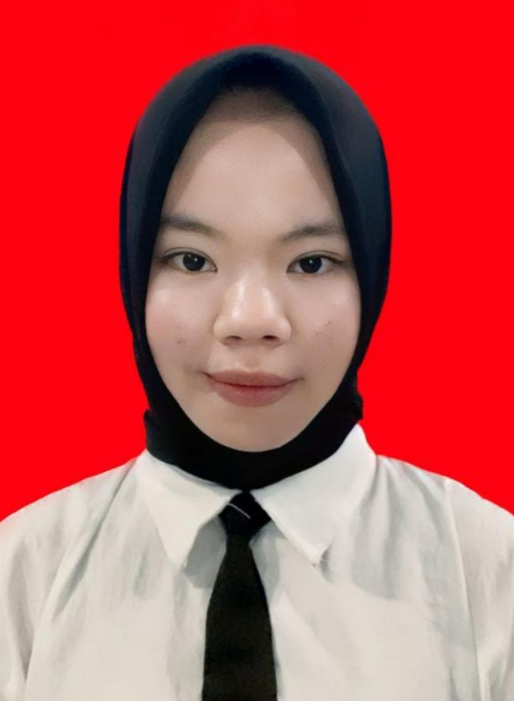
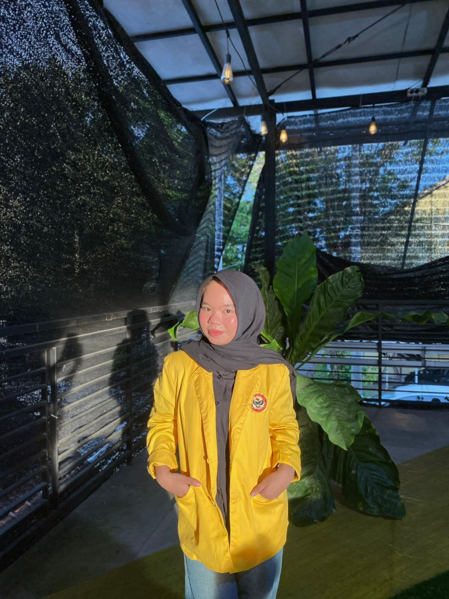
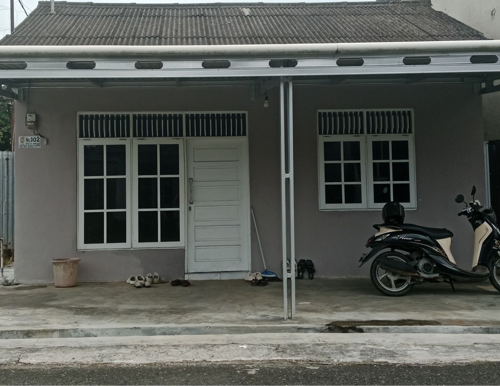
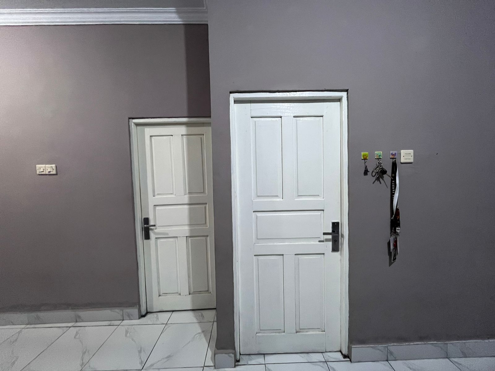
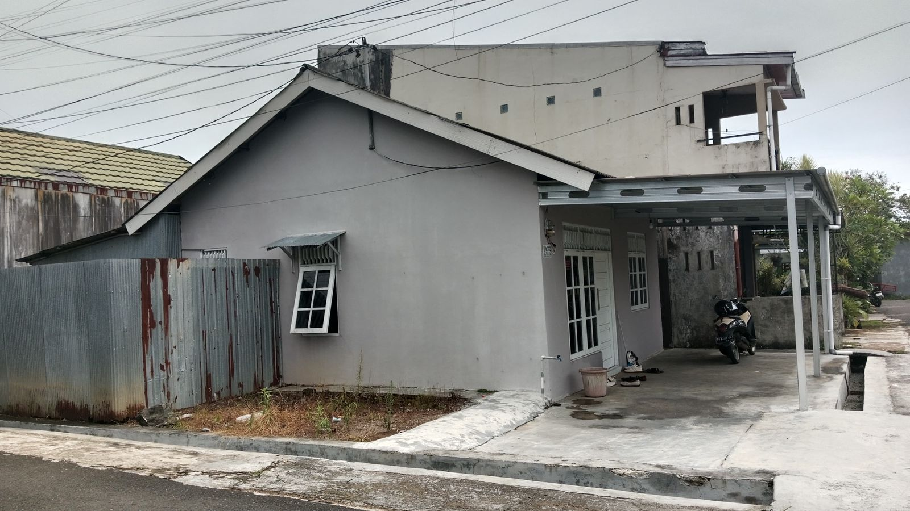
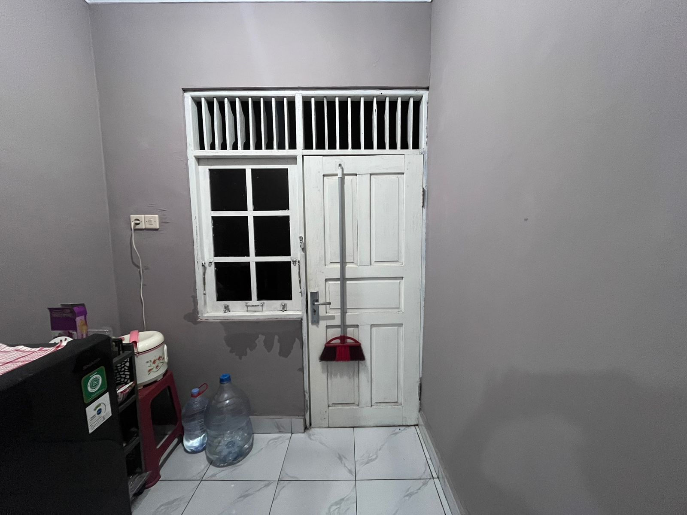

Tugas Sistem Informasi Manajemen Perikanan
Apriliana Putri - 2310715220004


Saya Apriliana Putri berasal dari Kabupaten Kotabaru, Kalimantan Selatan. Saya lahir di Gunung Calang, 01 April 2005 saat ini berusia 21 tahun dan saat ini sedang menempuh pendidikan di Universitas Lambung Mangkurat, Fakultas Perikanan dan Ilmu Kelautan, Program Studi S1-Sosial Ekonomi Perikanan. Saya adalah pemilik Nomor Induk Mahasiswa 2310715220004 yang dapat diketahui bahwa dua angka depan merupakan tahun saya bergabung menjadi Mahasiwi.Saya memiliki hobi menonton film dan drama korea dengan genre thriller, horor, dan action. Saya merupakan Mahasiswi angkatan 2023 yang saat ini sudah memasuki semester 6, saya juga merupakan anggota aktif di Himpunan Mahasiswa Sosial Ekonomi Perikanan.
Foto/Dokumentasi Tempat Tinggal Sekarang




Video Keadaan Tempat Tinggal Dari Bagian Dalam